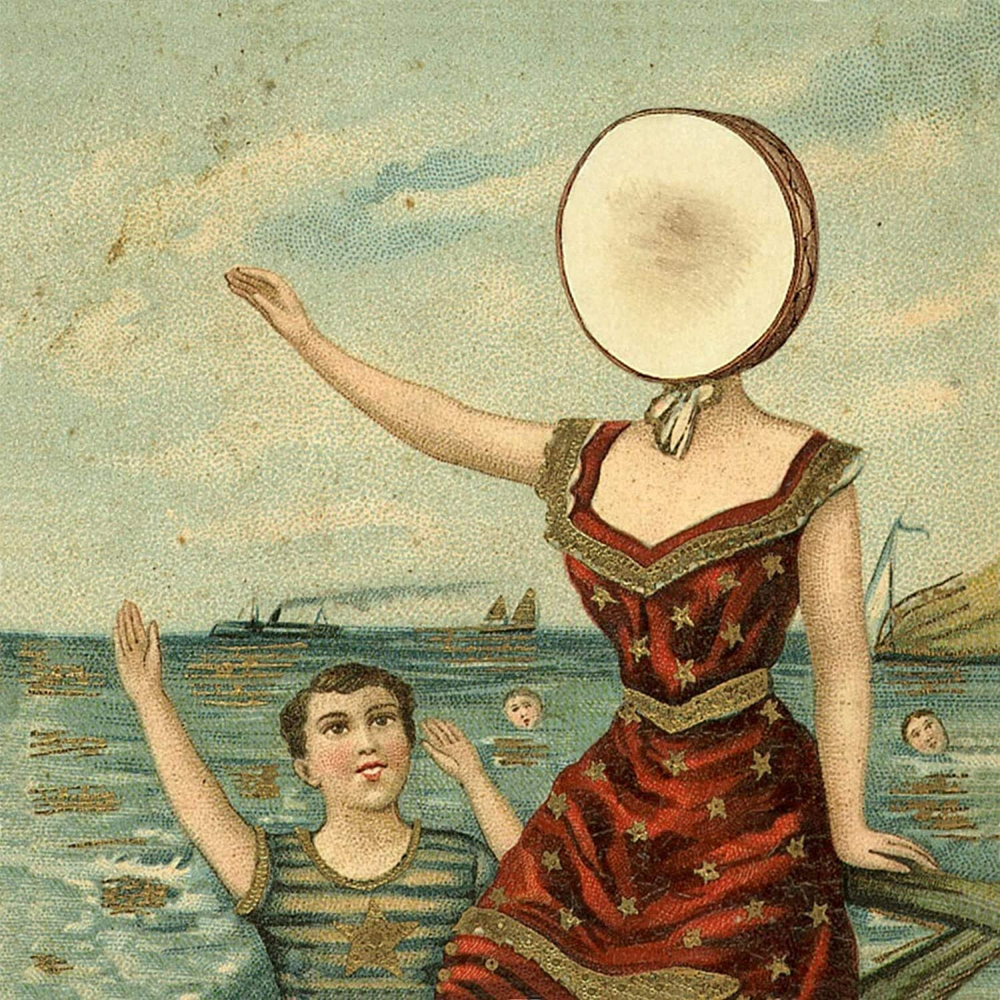
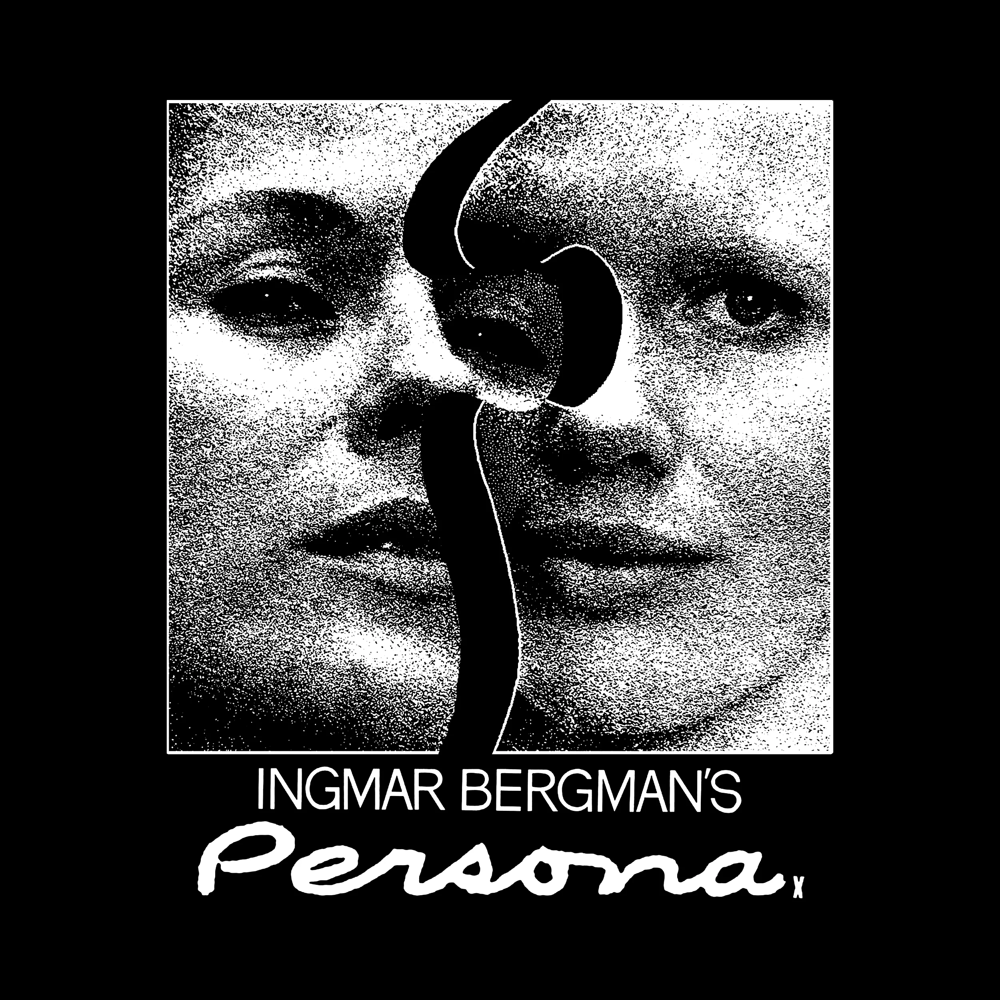
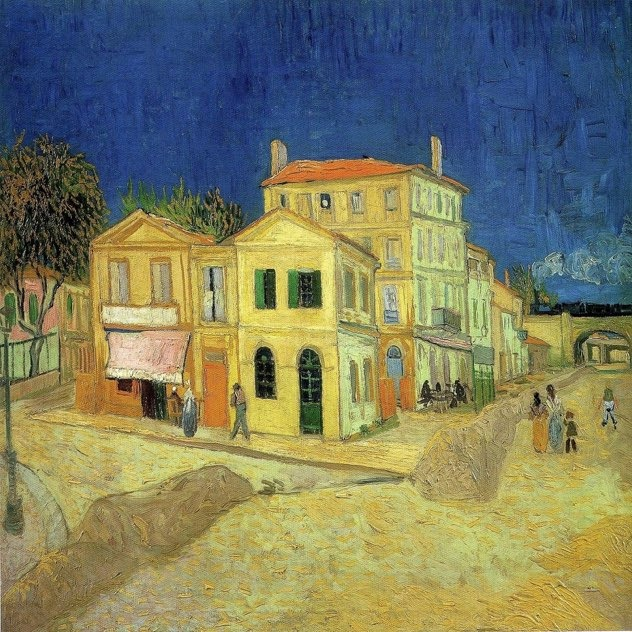

Laura.txt
Ciao Laura! Scusami tanto, so che sarai impegnatissima, ma avevo bisogno di parlare e Instagram non
permette
messaggi così lunghi. Come va? Spero tu stia continuando a fare ciò che ami di più.
Oggi stavo ascoltando una canzone e mi è venuta voglia di condividere con te un pezzo della mia vita.
Non so
bene perché, forse sono solo un po' arrabbiato. È il brano che ho ascoltato di più quando sono arrivato
a
Viterbo: "In the Aeroplane Over the Sea" dei Neutral Milk Hotel; probabilmente la conosci. La voce
struggente
del cantante quando si chiede come sia possibile «essere qualsiasi cosa» mi emoziona sempre.
Ricordo che, appena arrivato, la prima cosa che ho fatto è stata andare alla fontana in Piazza del
Plebiscito.
Non so nemmeno se abbia un nome preciso, ma spero di sì. Mi sono commosso: erano anni che non vedevo
qualcosa
di così bello, anche se, in fondo, è una fontana come tante. Ho pensato che da lì passassero molte più
persone,
molti più pensieri, e che ci fosse molto più inquinamento di quanto fossi abituato; eppure, proprio lì,
mi sono
sentito vivo. Poi sono andato in libreria e ho comprato più libri di quanti ne avessi programmati,
felice
semplicemente di averne una sotto casa. Ci vado ogni volta che posso: amo il silenzio che c'è e l'idea
che tra
le pagine si nasconda un intero universo che aspetta solo di essere scoperto da qualcuno.
Verso i sedici anni mi sono chiuso in camera, travolto da una depressione che mi ha portato ad
abbandonare la
scuola e tutto ciò che sembrava normale e scontato per un ragazzo. Ci sono rimasto fino ai diciannove.
Non ho
festeggiato il mio diciottesimo compleanno, non mi sono diplomato con gli altri, non ho viaggiato né
fatto
esperienze. Nel frattempo tutti i miei amici prendevano la patente, e io arrancavo, sentendomi dire che
ero
troppo debole e troppo sensibile. Per un po' ho creduto fosse la mia punizione per aver ferito a
viso
aperto qualcuno in passato. Ho reso la vita un inferno ai miei genitori, anche se non me lo hanno mai
detto.
Sono stati molto bravi con me.
Sia chiaro: nel mezzo succedono anche tante cose belle. Mentre stavo molto male, per non lasciarmi
trascinare via dal vuoto, iniziai a studiare in modo quasi ossessivo. Era il mio unico modo per restare
ancorato a qualcosa di reale. Approfondii letteratura, filosofia, programmazione, design e inglese, prendendo
addirittura un C1
Cambridge senza mai uscire dalla mia camera, insomma, ho cercato di colmare tutte le mie lacune. Mi cimentai nell'audiovisivo e nella fotografia finché
un ragazzo del mio paese si accorse di me tramite dei piccoli progetti che condividevo su Instagram.
Lui non è uno qualsiasi: lavora nella musica da anni, è nella band di Salmo, dirige a Sanremo e compone
per Sky. Mi ha insegnato tantissimo, umanamente e professionalmente, credendo in me quando io per primo
non lo facevo. Dice che ho un talento innato e che dovrei continuare su questa strada. Mi ha voluto con
sé
come direttore artistico per il festival del cinema e del documentario della mia regione nelle edizioni
2023 e 2024.
L'ho organizzato insieme a lui e ad altri ragazzi che vivono a Roma da una vita e che hanno portato con
sé
un mondo incredibile. Grazie a loro mi sono ritrovato a gestire ospiti d'eccezione e a confrontarmi con
registi, attori, musicisti e compagnie teatrali (tra cui alcune di Roma :p). È stato
faticosissimo,
ma vedere il mio nome sugli articoli e i miei genitori felici come una Pasqua come se avessi vinto un
Oscar (senza aver capito minimamente cosa avessi fatto) mi ha fatto capire cosa voglio davvero:
vivere dove c’è arte, dove si crea cultura. Effettivamente, me la cavavo.
Eppure, nonostante questo sprazzo di luce, il buio tornava sempre a bussare. Ho smesso di "lottare"
quando mi sono accorto di aver perso la capacità di sognare, di immaginarmi altrove, in una vita
diversa,
in un altro angolo del mondo, sotto un altro cielo, tra gli alberi e in salute. Ho iniziato a pensare
che sarebbe finita così, nel letto di casa mia, senza aver mai visto la Scozia, che è il mio sogno da
quando ero bambino.
La sorpresa della prima volta che senti dolore.
Mi sentivo una scatola vuota, con una convinzione così forte da portarmi a tentare di farla finita due
volte.
Per fortuna, entrambe senza riuscirci. Ohibò… meno male. Come avrebbe fatto il mondo senza una star come
me?
Ricordo ancora il musetto della mia cagnolina che mi guardava senza capire; forse è stata lei a farmi
fare un
passo indietro. Mi ha salvato la vita e non lo saprà mai. Spesso penso di non meritare il suo amore.
Dopo tanto tempo ho fatto le valigie e me ne sono andato, lasciando il paese che amo ma che mi stava
soffocando. Quel giorno ho pianto tutte le lacrime che avevo in corpo, con rabbia e gratitudine che si
mescolavano in modo perfetto, come quando guardi qualcuno che ti ha fatto soffrire ma che non hai mai
smesso di
amare. Sono stato tanto legato alla semplicità del mio paese e oggi, dopo aver capito che il mondo non
si ferma
oltre quel confine, provo una tenerezza infinita sapendo che esiste ancora un luogo così.
Per citarti Pavese ne "La luna e i falò":
«Un paese ci vuole, non fosse che per il gusto di andarsene via. Un paese vuol dire non essere soli,
sapere che
nella gente, nelle piante, nella terra, c'è qualcosa di tuo, che anche quando non ci sei resta ad
aspettarti.»
Arrivando qui non sono guarito, ho solo iniziato a chiedermi se fossi mai stato davvero malato. La
verità è che
non lo so. Parliamoci chiaro: l'ansia e la depressione, per quanto atroci, sanno essere una stampella
incredibilmente solida. Ti permettono di evitare il mondo reale, quello dei legami, delle gioie e delle
delusioni; tutto ciò che conta davvero. Ma il prezzo è altissimo: smette di importarti di ogni cosa,
finché
l'unico desiderio rimasto è spegnere la luce e andare a dormire quando la giornata finisce.
Ho giurato a me stesso di non rimettere piede in quegli angoli bui, tanto che a volte mi sembrano quasi
un'invenzione della mente. Nessuno avrebbe scommesso su di me, pensavano tutti che non ce l'avrei fatta
e che
sarei tornato a casa, nonostante tutti sperassero il contrario. Non so descriverti la sensazione di
lasciare
tutto ciò che hai di certo per ricominciare da zero: sarebbe come spiegarti cosa si prova a picchiare il
vento
o litigare con la propria ombra. Ho ripreso a sognare e stavolta sto lottando davvero. Sono tornato a
provare
emozioni e mi sono scoperto un ragazzo in gamba, forse molto più delle stesse persone che una volta ho
invidiato
ma che al mondo non sanno starci. Ora studio, lavoro, faccio la spesa, vado in libreria, preparo il
caffè e le
ciambelle. Guardo tanti film quando posso e mi dedico alle faccende: amo la mia Dyson,
Dio quanto la amo.
All'inizio questa tranquillità mi turbava: ero abituato al caos, non sapevo cosa farmene della quiete.
Ci sto ancora
prendendo confidenza. Resto malinconico, un po' strano, e probabilmente insopportabile nelle dosi
sbagliate, ma è una
versione di me che inizia a piacermi.
«E pur non la quercia essendo o il gran tiglio fronzuto, salir, anche non alto, ma salir senza aiuto.»
Non voglio nasconderti che ho vissuto con amarezza questa nostra non-amicizia; forse il fatto che io ti
scriva
così tanto ne è solamente un sintomo. A volte ho paura di ingigantire le situazioni, e probabilmente è
così,
chissà. Ma quella sera in cui parlammo mi sono sentito, dopo tantissimo tempo, felice e accolto. Mi
piacerebbe
sapere tutto di te. Ogni volta che ti mando un messaggio, è come se aspettassi che anche tu esplodessi
per
raccontarmi la tua vita.
È andata diversamente. A volte qualcuno passa nella nostra vita senza fermarsi, eppure resta più di chi
è
rimasto davvero. Il nostro rapporto abita in quella zona sospesa in cui due traiettorie si toccano per
un
istante e continuano a correre in direzioni diverse. Alla fine sono proprio le presenze incomplete a
durare,
quelle che non abbiamo vissuto fino in fondo e che, proprio per questo, continuano ad esistere. Trovo
tutto
questo molto più umano di tante altre interazioni confuse che ho avuto. Grazie per non avermi illuso e
per il
tempo che mi hai dedicato. Non cerco pena, né di farti cambiare idea: so che non ci riuscirei. Vorrei
solo aver
lasciato una traccia, senza la presunzione di essermi insinuato nelle tue memorie, ma solo per sapere
che sei
stata una piccola, minuscola comparsa nella mia vita, come spero di essere stato io per te. Se
continuassi a
scriverti finirei per mancarti di rispetto, accorciando sempre di più i tempi tra un messaggio e
l'altro.
Quindi, in bocca al lupo per tutto.
Ti ho voluto bene, per un momento.
Un caro saluto Laura, sii bella ❤️.





Alla fine la patente l'ho presa!
Ciao :p
Stai ancora scorrendo?
Non ho più nulla da dire
Davvero? Ancora qui?
Ok allora scrivimi.